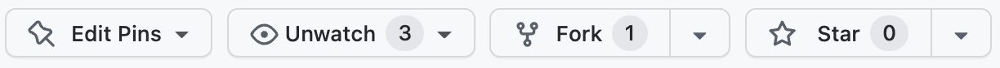

Best Practices in HPC Training
This instructor training material is focused on helping competent practitioners and experts teach their knowledge to others. It also serves a kickstart to teaching available ENCCS lessons.
The material presented here is partly derived from two instructor training resources developed in the CodeRefinery project as well as the instructor training lesson from The Carpentries:
Inspiration has also been drawn from the free online book Teaching Tech Together by Greg Wilson.
After attending a workshop covering this material, learners should:
Have increased confidence in teaching interactive workshops in online and in-person settings.
Be familiar with important pedagogical concepts and scientific findings about how people learn new skills.
Appreciate the importance of frequent hands-on practice in building skill.
Understand how learning can be improved by following certain best practices in interactive teaching.
Know how to backwards-design training material based on intended learning outcomes.
Know about important differences between online and in-person training and how inherent challenges in online training can be overcome.
Be familiar with a technical approach to collaboratively developing open source lessons based on a template.
Prerequisites
This course has no strict prerequisites, but
It is helpful if you have attended an ENCCS or CodeRefinery workshop, which are taught in an interactive and hands-on way.
We assume you already have competence in the technical topics and tools you want to teach.
While not a prerequisite for this course, version control (Git) is necessary to contribute to lesson development the way we show here (but the lesson design concepts are applicable to other styles, too).
Instructor note
30 min homework
Questions
What should I do before the EuroCC instructor training workshop?
Pre-workshop Preparation
These things will help you get the most out of this workshop, by giving you a broad overview at the beginning that you might only get later on during the workshop.
Read “How to help someone use a computer” (5 min)
How to help someone use a computer, by Phil
Agre.
Summary: Most of our teaching challenge is helping people to overcome bad user
interface design.
Prepare a short teaching demo (20 min)
Think about a topic that you know well, that you’ve taught before, or that you want to teach in the future. Think about a hands-on approach to how to teach it and prepare a 3-5 minute demo. It’s good if the demo is based on a sequence of steps that you prepare and explain during the demo.
During the instructor training workshop you will be asked to teach this topic to a small group of other participants and receive feedback. Your 3-5 minute demo does not need to be complete; it’s fine if you only include the initial steps of a larger thing.
Since this workshop is focused on teaching technical topics, it might be useful if your topic is also technical and involves showing shell commands, programming constructs or similar. But it can also involve navigating a graphical user interface (GUI) or using some computational tool.
Browse an ENCCS lesson (5 min)
Take 5 minutes and go through an ENCCS lesson to understand the general layout (which is based on the principles presented in this workshop). You don’t need to go in-depth to any of the material (unless you want, obviously).
Some example lessons:
(Optional) Read “The science of learning” (20 min)
Read this short paper The Science of Learning which provides a brief overview of some key evidence-based results in teaching. This paper is also used by The Carpentries for their Instructor Training workshops.
Remark
Don’t worry if there are sections you do not understand. The main objective is to have a baseline for our discussions during the instructor training workshop.
Instructor note
5 min teaching
10 min icebreaker
Welcome and Introduction
What do we want to get out of this workshop
Introduction of instructors and helpers
Each instructor can say what we want to get out of the instructor training
But we want to know from everybody and collect these in the live notes
Goals for this workshop
Inspire teachers and staff who teach technical topics: Use best practices, especially for online teaching.
Promote collaboration in teaching.
Motivate new instructors to take up open source lessons lessons, remix them, and to contribute.
Catalyze and form new networks and collaborations of teachers and trainers of practical scientific computing.
Giving confidence
Goal number one should be that we give participants the confidence to independently apply the tools or knowledge learnt. This is more important that giving a “complete” overview.
Lucy Whalley gave this great comment at a CodeRefinery workshop.
Tools for this workshop
We always start workshops with these:
Code of Conduct
We strive to follow the Contributor Covenant Code of Conduct to foster an inclusive and welcoming environment for everyone.
In short:
Use welcoming and inclusive language
Be respectful of different viewpoints and experiences
Gracefully accept constructive criticism
Focus on what is best for the community
Show courtesy and respect towards other community members
Contact details to report CoC violations can be found here.
Furthermore, as this is a hands-on, interactive workshop:
Be kind to each other and help each other as best you can.
If you can’t help someone or there is some problem, let someone know.
Finally, if you notice something that prevents you from learning as well as you can, let us know and don’t suffer silently, even the “little things”:
Volume too low?
Font size too small?
Generally confusing instructor?
Not enough breaks?
Zoom etiquette
Please change your Zoom username to show your full name
Please keep your camera on as much as possible
Try not to multitask - you and everyone else will have a better learning experience that way!
Ice-breaker
Ice-breaker in groups (10 minutes)
Share your approach to teaching and/or your teaching philosophy with your group.
If your approach uses specific tricks and solutions, please share them in the live document for others.
Additional ice-breaker questions:
What is your motivation for taking this training?
Instructor note
10 min teaching
5 min discussion
Training providers
Many training providers offer free hands-on technical workshops to help researchers, engineers, and data scientists enhance their skills and productivity. This page highlights three projects that share a common teaching approach, covering topics from beginner-level programming to advanced HPC for experts.
The Carpentries
{kind=link}
The Carpentries is an international project that comprises Software Carpentry and Data Carpentry, communities of instructors, trainers, maintainers, helpers, and supporters who share a mission to teach foundational computational and data science skills to researchers. The Carpentries teach foundational coding and data science skills to researchers worldwide.
Carpentry instructor training
ENCCS instructors are encouraged to complete the Carpentry instructor training workshop, which anyone can apply for.
This instructor training lesson presents several concepts and methods from the Carpentries approach to teaching and highlight parts that are most important for teaching ENCCS style lessons. We encourage you to further study the Carpentry lesson later and to sign up for a 2-day Carpentry intructor training workshop.
Carpentries audience
The Carpentries aims to teach computational competence to learners through an applied approach, avoiding the theoretical and general in favor of the practical and specific. Learners do not need to have any prior experience in programming. One major goal of a Carpentry workshop is to raise awareness on the tools researchers can learn/use to speed up their research.
By showing learners how to solve specific problems with specific tools and providing hands-on practice, learners develops confidence for future learning.
Novices
Carpentry learners can be qualified as novices: they do not know what they need to learn yet. A typical example is the usage of version control: the Carpentry git lesson aims to give a very high level conceptual overview of Git but it does not explain how it can be used in research projects.
Available lessons
HPC Carpentry
HPC Carpentry teaches HPC-oriented coding and data science skills to researchers and aims to bring High Performance Computing under the Carpentries umbrella. HPC Carpentry is a set of teaching materials designed to help new users take advantage of high-performance computing systems. No prior computational experience is required - these lessons are ideal for either an in-person workshop or independent study.
Available lessons:
Data Carpentry
Data Carpentry develops and teaches workshops on the fundamental data skills needed to conduct research with the mission to provide researchers with high-quality, domain-specific training covering the full lifecycle of data-driven research. Data Carpentry workshops are domain-specific, teaching researchers the skills most relevant to their domain and using examples from their type of work.
CodeRefinery
CodeRefinery is a Nordic e-Infrastructure Collaboration (NeIC) project that started in October 2016. The main goals of CodeRefinery are:
Develop and maintain training material on software best practices for researchers that already write code. The CodeRefinery lessons address all academic disciplines and try to be as programming language-independent as possible.
Provide a code repository hosting service that is open and free for all researchers based in universities and research institutes from Nordic countries.
Provide training opportunities in the Nordics using Carpentries and CodeRefinery training materials.
Articulate and implement the CodeRefinery sustainability plan.
CodeRefinery audience
CodeRefinery workshops differ from Carpentry workshops as the audience is assumed to already write code and scripts and we aim at teaching them best software practices.
CodeRefinery learners usually do not have a good overview of best software practices but are aware of the need to learn them. Very often, they know the tools (Git, Jupyter, etc.) we are teaching but have difficulties to make the best use of them in their software development workflow.
Competent practitioners
CodeRefinery learners can be qualified as competent practitioners because they already have an understanding of their needs. Novices and competent practitioners will be more clearly defined in a later section.
Available lessons
Reproducible research - Preparing code to be usable by you and others in the future
Automated testing - Preventing yourself and others from breaking your functioning code
Modular code development - Making reusing parts of your code easier
Many CodeRefinery contributors work at HPC centres, and several lessons on HPC have been developed:
ENCCS
ENCCS (EuroCC National Competence Center Sweden) is one of 33 nodes of the EuroCC project, which is funded by the European High-Performance Computing Joint Undertaking (EuroHPC-JU). As an NCC, we act as the central point of contact for HPC and related technologies in Sweden. Our mission is to empower Swedish industry, academia and the public sector to leverage HPC, AI, and HPDA efficiently and effectively.

Training is one of the main pillars of ENCCS’ activities. We have developed a large amount of public and open source lesson material and have organised, taught or contributed to over 60 online workshops since September 2020. Our training philosophy and methods are to a large extent derived from two well established educational initiatives: CodeRefinery and The Carpentries. The material presented here covers both pedagogical ideas and practical aspects which underpin the development of lesson material, organisation of online or in-person workshops and the teaching itself.
ENCCS audience
Similarly to CodeRefinery, ENCCS primarily targets competent practitioners in training workshops: participants are assumed to know what their needs are. Typically, their needs are to learn a technique or method to adapt their code to HPC, to learn novel programming languages or frameworks, or to deepen their knowledge of machine learning methods.
Available lessons
For full overview, see ENCCS lessons.
GPU programming
General HPC
Programming languages
AI/ML
Applications
Tools
Quantum computing
Recommended external resources
The lessons above do not cover all relevant topics in HPC, HPDA and AI, but ENCCS also maintains a list of recommended public training material which you can find at https://enccs.se/external-training-resources/.
Contribute to the list of external training resources
For after this workshop:
If you know of other good public training material, or if you have developed own material
that you would like to share with the world, please get in touch or
open an issue on this repository!
Learning theories
Instructor note
10 min teaching
5 min discussion
Landscape of available learning theories

Adapted from the Hotel Project, licensed under CC-BY-SA-4.0
We don’t have to worry about details in the infographic above, it’s just to show that there’s no single theory of learning. Different disciplines organise how we process and retain knowledge in various ways, and with multiple types of learning, multiple theories are relevant. Learning theories help us structure what we know and guide us toward effective learning. This lesson focuses on a few key concepts that are easy to translate into concrete actions in a learning environment.
What you will learn here
ENCCS, CodeRefinery and The Carpentries all teach computational competences to learners through an applied approach founded on research-based teaching principles. Usually, we avoid the theoretical and general in favor of the practical and specific. By showing learners how to solve specific problems with specific tools and providing hands-on practice, we develop learners’ confidence and empower them to start applying new knowledge immediately.
Learners need to practice what they are learning in real time and get feedback on what they are doing. That is why the teaching approach relies on live coding.
Learners best learn in a respectful and motivating classroom environment, so it’s important to use a Code of Conduct and avoid certain demotivating language.
Learners are encouraged to help each other and collaborate during workshops as this improves their confidence and reinforces concepts taught.
Specific aspects
Teaching material (lessons) available in advance and not PDF slides.
Lessons suitable also for self study.
Interactive, hands-on teaching: presentations and type-alongs interleaved with exercises.
Shared collaborative workshop document for questions, answers, information etc.
Clearly defined teaching roles (instructor, host, answering questions in shared document, …)
Recruiting volunteer helpers and instructors.
Frequently asking for and encouraging feedback.
Emphasis on code of conduct and inclusivity.
Thoughtful screen sharing and shell sharing.
Lessons developed from well defined learning objectives.
Using a standard lesson template.
Collaborative lesson development and peer review on GitHub.
Lessons are open source instead of private.
How common are these practices?
How many of the teaching features above do you use in your own teaching?
The instructor can copy-paste the list below to the shared workshop document and conduct a poll.
Poll
Which of these practices do you use in your teaching? Vote by adding "o".
- Teaching material (lessons) available in advance and not PDF slides: o
- Lessons suitable also for self study: o
- Interactive, hands-on teaching: presentations and type-alongs interleaved with exercises: o
- Shared collaborative workshop document for questions, answers, information etc: o
- Clearly defined teaching roles (instructor, host, answering questions in shared document, ...): o
- Recruiting volunteer helpers and instructors: o
- Frequently asking for and encouraging feedback: o
- Emphasis on code of conduct and inclusivity: o
- Thoughtful screen sharing and shell sharing: o
- Lessons developed from well defined learning objectives: o
- Using a standard lesson template: o
- Collaborative lesson development and peer review on GitHub: o
- Lessons are open source instead of private: o
See also
Instructor note
0 min teaching
30 min exercise
First teaching practice
Before commencing the walkthrough of this instructor training material, we will try to create a mental reference point to how we currently approach teaching, and also to how we currently provide feedback to other teachers. At the very end of the workshop we will have a similar exercise, and it will be interesting to compare our experiences before and after covering the lesson.
Initial teaching and feedback experience (20 minutes)
In groups of two, take turns to “teach” a topic close to your heart to your collaborator. This can be a topic you know well, that you’ve taught before, or that you want to teach in the future.
Keep it short, around 3-5 minutes. Try to be concrete and hands-on. It can involve shell commands, programming, navigating a graphical user interface or using a computational tool.
The other person listens and optionally tries to type along (if relevant).
The listener then provides feedback on the teaching. What went well, what could be improved?
Now swap roles and repeat.
Main room discussion (10 minutes)
What was difficult during the teaching demo?
Did you make mistakes that you immediately became aware of?
How did it go when providing feedback, could you think of constructive criticism?
Instructor note
20 min teaching
25 min exercises
Acquisition of Skill
Questions
How do people learn?
Does subject expertise make someone a great teacher?
Objectives
Get an overview of cognitive development and how learners build mental models.
Compare and contrast three stages of skill acquisition.
Create a concept map to explore a simple mental model.
Know your learners
The first task in teaching is to figure out who your learners are. According to the Dreyfus model of skill acquisition learners acquire skills and advance through distinct stages through practice and formal instruction. In simplified form, the three stages of this model are:
Novices, competent practitioners and experts

Participants in HPC training workshops are usually competent practitioners. They already write code and know what additional tools or techniques they need to learn to accomplish their goals.
As will be further discussed in the episode on Lesson design, it is important to clearly define the target audience of workshops, including their background knowledge and training needs.
Cognitive development and mental models
Effective learning is facilitated by the creation of a well-founded mental model. A mental model may be represented as a collection of concepts and facts, connected by relationships. The mental model of an expert in any given subject will be far larger and more complex than that of a novice, including both more concepts and more detailed and numerous relationships. However, both may be perfectly useful in certain contexts.
Example mental model
A long-time European resident may have an advanced understanding of the location of European countries, major cities and landmarks, weather patterns, regional economies and demographic patterns, as well as the relationships among these, compared with their understanding of these relationships for other countries. In other words, their mental model of Europe is more complex compared with their mental model of other continents.

We can distinguish between a novice and a competent practitioner (and an expert!) for a given domain based on the complexity of their mental models.
A novice has a minimal mental model of surface features of the domain. Inaccuracies based on limited prior knowledge may interfere with adding new information. Predictions are likely to borrow heavily from mental models of other domains which seem superficially similar. One sign that someone is a novice is that their questions are “not even wrong”.
A competent practitioner has a mental model that is useful for everyday purposes. Most new information they are likely to encounter will fit well with their existing model. Even though many potential elements of their mental model may still be missing or wrong, predictions about their area of work are usually accurate.
An expert has a densely populated and connected mental model that is especially good for problem solving. They quickly connect concepts that others may not see as being related. They may have difficulty explaining how they are thinking in ways that do not rely on other features unique to their own mental model.
Concept maps
Most people do not naturally visualize a mental model as a diagram of concepts and relationships. Mental models are complicated! Yet, visual representation of concepts and relationships can be a useful way to explore and understand hidden features of a mental model.
A useful tool for exploring any network of concepts and relationships is a concept map. A concept map asks you to identify which concepts are most relevant to a topic at hand and to identify how they are connected.
Adapted from Teaching Tech Together, licensed under CC-BY-NC-4.0
Mapping a mental model (20 min)
On a piece of paper, draw a simplified concept map of a topic that you are already teaching or that you want to teach in the future.
What are 3-4 core concepts involved?
How are those concepts related?
If you would like to try out an online tool for this exercise, visit https://excalidraw.com
Integrating new knowledge
According to the constructivism theory in education, learners do not acquire knowledge and understanding by passively perceiving it but rather by constructing new understanding and knowledge through experience and social discourse, integrating new information with what they already know.
We can understand this as adding new nodes and their connections to existing nodes to their mental models. We should thus try to connect new concepts with existing knowledge that we can assume the learners to have.
Meaning
Memory retention is also improved when learners are required to attach meaning to new information and reflect on why it is important. Instructors can assign tasks which require explanation (e.g. why something happened) to promote learners to meaningfully organise new information.
The power of analogies
Good analogies can be extraordinarily useful when teaching, because they draw upon an existing mental model to fill in another, speeding learning and making a memorable connection. However, all analogies have limitations! If you choose to use an analogy, be sure its usefulness outweighs its potential to generate misconceptions that may interfere with learning.
How “knowledge” gets in the way
Mental models are hardly ever built from scratch. Every learner comes to a topic with some amount of information, ideas and opinions about the topic. This is true even in the case where a learner can’t articulate their prior knowledge and beliefs.
In many cases, this prior knowledge is incomplete or inaccurate. Inaccurate beliefs (“misconceptions”) can impede learning by making it more difficult for learners to incorporate new, correct information into their mental models. Correcting learners’ misconceptions is at least as important as presenting them with correct information. Broadly speaking, misconceptions fall into three categories:
Simple factual errors. These are the easiest to correct.
Broken models. We can address these by having learners reason through examples to see contradictions.
Fundamental beliefs. These beliefs are deeply connected to the learner’s social identity and are the hardest to change.
Describe a misconception (5 min)
Describe a misconception you have encountered as a teacher or as a learner.
Expertise and teaching
Expertise is more than just knowing more facts - an expert’s mental models are also much more densely connected (as we saw above). Having a greater connectivity of a mental model allows experts to:
See connections between two topics or ideas that no one else can see.
See a single problem in several different ways.
Know intuitively how to solve a problem, or “what questions to ask”.
Jump directly from a problem to its solution because there is a direct link between the two in
their mind. Where a competent practitioner would have to reason “A therefore B therefore C therefore … therefore F”, the expert can go from A to F in a single step (“A therefore F”).
However, experts are often so familiar with their subject that they can no longer imagine what it’s like to not see the world that way. They can thus be less able to teach the subject than people with less expertise who still remember learning it themselves. This phenomenon is known as the “expert blind spot” or the “expert awareness gap”.
The good news is that this impediment can be overcome by training! Experts can be highly effective as long as they learn to identify and correct for their own expert awareness gaps.
Keypoints
People at different skill level have different connectivities of their mental models.
Teachers can help learners integrate new knowledge by connecting it to previous knowledge, by attaching meaning to the new information, and by powerful analogies.
Experts can face challenges when teaching novices due to expert awareness gaps.
Instructor note
20 min teaching
20 min exercises
45 min practice (optional)
Lesson Design
Questions
How can we design lessons to work with, rather than against, memory constraints?
Objectives
Understand the principles behind backwards lesson design.
Remember a few tricks for facilitating memory retention.
Backwards lesson design
When composing new instructional material - lessons - we can take a “reverse” approach to instruction, as described in Wiggins and McTighe’s Understanding by Design, that keeps the focus firmly on learning outcomes. The order of preparation in this case becomes
Determine your learning objectives.
Decide what constitutes evidence that objectives have been met, and design assessments to target that evidence.
Design instruction: Sort assessments in order of increasing complexity, and write content that connects everything together.
Deciding what to teach: visual guide

Working with learning objectives
Lessons should have a clear learning objectives section. Good learning objectives are quite specific about the intended effect of a lesson on its learners. We should aim to create learning objectives that are specific, accurate, and informative for both learners and instructors.
In practice, it’s best to start defining your target audience by answering to questions such as:
What is the expected educational or skill level of my audience?
Have they been already exposed to the technologies I am planning to teach?
What tools do they already use?
What are the main issues they are currently experiencing?
Once you clarified your target audience, it is useful to create learner personas. This will help you during the development process by providing concrete examples of potential learners showing up at your workshops.
For each learner persona, try to think of what is useful to them.
What do they need to remember/understand/apply/analyse/evaluate/create (see Bloom’s taxonomy below).
Then, you create a sequence of exercises which test incrementally progressing tasks and acquisition of the new skills.
Finally, you write material to teach the gap between exercises.
Using Bloom’s Taxonomy to write effective learning objectives
Bloom’s Taxonomy is a framework for thinking about learning that breaks progress down into discrete, hierarchical steps. While many ideas have come and gone in education, Bloom’s has remained a useful tool for educators, in particular because the hierarchy seems to be reasonably valid: outcomes at the top of the hierarchy cannot be achieved without mastery of outcomes at the bottom.

Image credit: Vanderbilt University Center for Teaching
How do you design? (10 min)
Discuss either in groups or via collaborative document:
How do you start when you design a new lesson/presentation?
Has your approach changed over the years? If yes, how?
Memory management
Learning involves memory. For our purposes, human memory can be divided into two different layers, long-term and short-term. Long-term memory, which we use to store persistent information, is essentially unbounded but is slow to access. Short-term memory (also called working memory), which we use to actively think about things, is much faster but also much smaller. It has been estimated that the average adult’s short-term memory can hold 7±2 items for a few seconds before things start to drop out.
Figure adapted from Teaching Tech Together, licensed under CC-BY-NC-4.0
If we present our learners with large amounts of information, without giving them the opportunity to practice using it (and thereby transfer it into long-term memory), they will not retain the material as well as if we present small amounts of information interspersed with practice opportunities.
When designing lessons we can try to maximise memory retention through a number of strategies:
Chunking: Our minds can store larger numbers of facts in short-term memory by creating chunks, or relationships among separate items, allowing them to be remembered as a single item. Connecting information makes it easier to remember.
Formative assessment to support memory consolidation: Formative assessment helps learners solidify their understanding and begin transferring ideas into long-term memory. Limitations of short-term memory are one reason why assessments should be frequent: short-term memory is limited not only in space, but also in time.
Group work: Elaboration (explaining your work) supports transfer to long-term memory. This is one reason why teaching is one of the most effective ways to learn! Group work can feel uncomfortable at first and consumes time in a workshop, but learners often rate group work as a high point for both enjoyment and learning in a workshop.
Opportunities for reflection: Reflection is another tool that can help learners review things they have learned, strengthen connections between them, and consolidate long-term memories. Asking learners for feedback can be an effective consolidating prompt as providing feedback demands some reflection on what has been learned.
Counting new concepts: It is important to limit the number of concepts introduced in a lesson, but this can be hard! Planning your lesson with a concept map can help you not only identify key concepts and relationships, but also to notice when you are trying to teach too many things at once.
Formative and summative assessment
Formative assessment takes place during teaching and learning. It sounds like a fancy term, but it can be used to describe any interaction or activity that provides feedback to both instructors and learners about learners’ level of understanding of the material. For learners, this feedback can help focus their study efforts. For instructors, it allows them to refocus their instruction to respond to challenges that learners are facing. Used continuously.
Summative assessment is used to judge whether a learner has reached an acceptable level of competence. Usually, at the end of a course learners either “pass” or “fail” a summative assessment.
Designing formative assessment
Well designed formative assessment tasks – i.e. quick questions and exercises – can go a long way towards correcting misconceptions and expanding the mental models of learners.
Here are some suggestions to keep in mind when designing exercises:
Not every exercise has to be an amazing hand-on example. Mixing with smaller, more conceptual things can reduce cognitive load.
Try to make your exercises relevant, meaningful and connected to previous knowledge. Connect the exercises to the real world. When learners understand the meaning of new concepts it will be easier for them to remember.
Create more involved exercises that can be optional for more advanced learners. This is a way to meet the needs of participants with a wide range of background knowledge.
Good exercises are the most important factor in a good lesson
Even if you are preparing the rest of the lesson mostly alone, consider a good long brainstorming session to go from “list of topics to cover” to “sequence of exercises”.
When you are stuck thinking “how can I make an exercise that covers X”, look through the lists below for inspiration. Not every exercise has to be an sophisticated hands-on thing, so don’t be afraid to use different types:
Types of exercises:
Multiple choice (easy to get feedback via a classroom tool; try to design each wrong answer so that it identifies a specific misconception).
Code yourself (traditional programming).
Code yourself + multiple choice to see what the answer is (allows you to get feedback).
Minimal fix (given broken code, make it work).
Parsons problems (working solution but lines in random order, learner must “only” put them in proper order).
Fill in the blank, faded problems.
Tracing execution.
Tracing values through code flow.
Reverse execution (find input that gives an output).
Theme and variations (working code, adapt to other type of situation/problem).
Refactoring.
Draw a diagram.
Label diagram.
Matching problem: two sets of Q/A, match them.
Tip:
When designing exercises, consider that some participants will get stuck and may want to re-join at a later exercise. In other words it is nice if exercises build up on each other but not at the cost that if participants get stuck at exercise 2, they will not be able to do exercises 3 to N.

Adapted from Teaching Tech Together, licensed under CC-BY-NC-4.0
Using formative assessment to identify misconceptions
Formative assessment can be used to tease out misconceptions using for example multiple choice questions (MCQ). When designed carefully, MCQs can target anticipated misconceptions with surgical precision.
For example, suppose we are teaching children multi-digit addition. A well-designed MCQ could be:
Q: what is 27 + 15 ?
a) 42
b) 32
c) 312
d) 33
What misconceptions do the wrong answers reveal?
Solution
If the child answers 32, they are throwing away the carry completely.
If they answer 312, they know that they cannot just discard the carried ‘1’, but do not understand that it is actually a ten and needs to be added into the next column. In other words, they are treating each column of numbers as unconnected to its neighbors.
If they answer 33 then they know they have to carry the 1, but are carrying it back into the same column it came from.
Design formative assessment to identify misconceptions (10 min)
Individually or in groups, choose a topic that you have taught in the past or that you want to teach later.
What relevant misconceptions might a novice learner bring to the classroom?
Create your question. How many choices can you think of that will diagnose a specific misconception?
Type your question into the shared document and explain the diagnostic power of each choice. Discuss the question in the classroom.
Design a faded example (10 min)
This exercises assumes that you are teaching a technical topic like programming or similar.
Try to design a faded example, i.e. an example code where learners should fill in the blanks.
Think of the level of your learners. How much would you fade out for a novice? How about a competent practitioner?
How did you decide what to fade out?
Present your example in a small group and let others in your team guess which level you intended the example for!
Practice backwards design
Discuss the backwards-design of a lesson
Let’s take as an example the HPC Carpentry lesson
Target audience
What is the expected educational level of my audience?
A PhD student, postdoc or young researcher.
Have they been already exposed to the technologies I am planning to teach?
The word HPC is not new to them and they may have already used an HPC but are still not capable of giving a proper definition of HPC. In addition, we do not expect them to know much about parallelism and they cannot make any distinction between various available parallelism paradigms.
What tools do they already use?
serial codes, multi-threaded codes, data parallelism; usually out-of-the-box tools.
they may have tried to “scale” their code (multiprocessing, threading, GPUs) with more or less success.
What are the main issues they are currently experiencing?
they cannot solve their problems either because they would like to run the same code but with many different datasets or because their problem is larger (more computations/memory).
most of the time they know their codes can run on HPC (from the documentation) but never really had the opportunity to try it out.
Very few will have their own codes where they may have tried different things to speed it up (threading, task parallelism) but have no clear strategy.
Learner persona
Sonya is a 1st year PhD student: she recently moved to Oslo and joined the Computational and Systems Neuroscience group. She will be using the NEST, a simulator for spiking neural network model. She used NEST during her master thesis but on her small cluster: she never used an HPC resource and is really excited about it.
Robert is a field ecologist who obtained his PhD 6 months ago. He is now working on a new project with Climate scientists and as a consequence will need to run global climate models. He is not very familiar with command line even though he attended a Software Carpentry workshop and the idea to use HPC is a bit terrifying. He knows that he will get support from his team who has extensive experience with HPC but would like to become more independent and be able to run his own simulations (rather than copying existing cases).
Jessica is a postdoc working on a project that investigates numerically the complex dynamics arising at the tip of a fluid-driven rupture. Fluid dynamics will be computed by a finite element method solving the compressible Navier-Stokes equations on a moving mesh. She uses a code she has developed during her PhD and that is based on existing libraries. She has mostly ran it on a local desktop; her work during her PhD was very limited due to the lack of computing resources and she is now very keen is moving to HPC; she knows that it will requires some work, in particular to parallelize her code. This HPC training will be her first experience with HPC.
Learning outcomes
Understand the difference between HPCs and other local/remote machines
Understand the notion of core, nodes, cluster, shared/distributed memory, etc.
Understand the notion of login nodes.
Understand the need for a scheduler and how to use it appropriately
Understand why optimising I/O is important on HPC and how to best use HPC filesystems
Understand the need to parallelize (or use existing parallel) codes and in which cases HPCs is a must (when communications is required)
Understand how to get your code ready to use on HPC (access to libraries, installation of your own libraries/software, etc.)
Understand that an HPC is an operational machine and is not meant for developing codes.
Exercises
Get basic information such the number of CPUs, memory from your laptop and try to do the same on a HPC. Discuss outcomes.
Try to create files on the different filesystems on your HPC resource and access them.
Create different types of job scripts, submit and check outputs.
Make a concrete example to run a specific software on your HPC (something like GROMACS).
Backwards-design a lesson (45 min)
Choose a simple lesson topic and apply backwards lesson design. You won’t get all the way through, but come up with a logical progression of exercises.
The section you pick should require screen sharing and be of some follow-along task (preferably using a shell).
Some suggestions:
Regular expressions
Making papers in LaTeX
Making figures in your favorite programming language
Linux shell basics
Something non-technical, such as painting a room
Some aspect from an already existing lesson
An ENCCS lesson (or an episode therein)
Unix shell in a HPC context (or an episode therein)
A lesson you always wanted to teach
Exercise (30 minutes):
Collect notes in a shared document.
Start with learner personas and learning outcomes.
Come up with a logical progression of exercises.
Discussion (15 minutes):
How does this approach compare to other lessons or courses you have designed?
We read, compare, and discuss our notes.
See also
CodeRefinery lesson-design manual
A short summary of “Teaching Tech Together”
Keypoints
Having a semi-rigid lesson design process can save time to start drafting and will probably increase quality and relevance of the lessons
Instructor note
20 min teaching
30 min exercises
Good Interactive Teaching Practices
Questions
What is cognitive load and how does it affect learning?
Why is motivation important?
Objectives
Distinguish desirable from undesirable cognitive load.
Cognitive load
Memory is not the only cognitive resource that is limited. Attention is constrained as well, which
can limit the information that enters short term memory in the first place as well as interfere with
consolidating into long-term memory.
Many people believe that they can “multi-task”, but the reality is that
attention can only focus on one thing at a time. Adding items that demand attention adds more things
to alternate between, which can reduce efficiency and performance on all of them.
While there was a brief interest in 2010s in the studies of learning by the “digital natives”
– generation born in an age of omnipresent digital media –
the hypothesis about their ability to multitask effectively also seems likely to be proven false
(see e.g. Kirschner).
There are different theories of cognitive load. In one of these, Sweller posits that people have to attend to three types of things when they are learning:
Things they have to think about in order to perform a task (“intrinsic”).
Mental effort required to connect the task to new and old information (“germane”).
Distractions and other mental effort not directly related to performing or learning from the task (“extraneous”).
Cognitive load is not always a bad thing! There is plenty of evidence that some difficulty is desirable and can increase learning. However, there are limits. Managing all forms of cognitive load, with particular attention to extraneous load, can help prevent cognitive overload from impeding learning altogether.
Adapted from Teaching Tech Together, licensed under CC-BY-NC-4.0
Live demos and type-along sessions
One way to manage cognitive load as tasks become more complex is by using guided practice: creating a structure that narrowly guides focus on specific skills and knowledge in a stepped fashion, with feedback at each step before transferring attention to a new feature.
Worked examples, i.e. step-by-step demonstrations of how to perform particular tasks,
can reduce cognitive load
as they provide the scaffolding needed for learners to transfer
knowledge from working memory to long-term memory. Type-along sessions are particularly useful
as learners get to develop their “muscle memory” while the instructor slowly walks through
and explains each step. Splitting the task into well defined steps also helps learners
see the underlying structure of a problem and how it can be transferred to other types of
problems.
Exercises which learners should solve by themselves can build on the type-along sessions but with some of the scaffolding removed so that they need to complete some problem steps (faded examples).
Stick to the script
Learning can be enhanced by combining multiple information sources, for example by showing a piece of code (or a graphic or list of bullet points) while explaining it aloud. But make sure to stick to the script! Conflicting information splits the attention and leads to unnecessary cognitive load.
Copy-pasting vs manual typing
Manually typing out code into a programming environment takes significantly longer time than copy-pasting it from lesson material, but learners usually strongly prefer it. Typing out every single code covered in a workshop might be too much, but instructors should try to manually write out as much as is reasonable to do.
Types of extraneous cognitive load (5 minutes)
Consider the following learning environments:
lectures
group work
type-along exercises
Think about examples of extraneous load that might interfere with the learning experience and how you (the instructor) could avoid it. Add your thoughts to the shared document.
The importance of going slow
It takes work to actively assess mental models throughout a workshop; this also takes time. This can make Instructors feel conflicted about using formative assessment routinely. However, the need to conduct routine assessment is not the only reason why a workshop should proceed more slowly than you think.
Expert awareness gap
Because your learners’ mental models will likely be less densely connected than your own, a conclusion that seems obvious to you will not seem that way to your learners. It is important to explain what you are doing step-by-step, and how each step leads to the next one.
Note that the expert awareness gap is also referred to as “expert blind spot”.
Taking advantage of errors
Experts can quickly diagnose errors which may seem cryptic to novices or competent practitioners. If faced with an error message while teaching, an expert will often automatically diagnose and solve a problem before a novice has even finished reading the error message. Because of this, it is very important while teaching to be explicit about the process you are using to engage with errors, even if they seem trivial to you, as they often will.
When faced with an error message, take the time to explain what happened and how the error message can be understood. This will not only teach learners to understand and read stack traces, but also give them confidence from seeing that even an expert makes mistakes!
Meta-talk
Don’t just teach, also make sure you guide the learners through the course.
You know what you just discussed, and what is coming next, but learners are often stuck thinking about what is happening right now.
Give a lot of “meta-talk” that is not just about the topic you are teaching, but how you are teaching it.
Examples
Why you are doing each episode
What is the purpose of each exercise
Clearly state what someone should accomplish in each exercise and how long it will take - don’t assume this is obvious.
What is the point of each lesson. How much should people expect to get from it? Should you follow everything, or are some things advanced and optional? Make that clear.
What are the top issues new instructors face? (10 minutes)
Brainstorm about what issues new teachers/instructors might face in interactive workshops. Answer a poll: which suggested common issues seem important to you? Do you have another, not-mentioned examples? (You may write them down in the shared document.)
Some suggestions
Addressing participants
Get the speed correct: not too fast and not (far) too slow.
Don’t make exercise sessions too short to “save time”. Better to have them as long as possible.
Don’t expect too much of learners during exercises; just reading and understanding the task takes time.
Cater to participants with different backgrounds and different levels of experience.
Learners may not have software prerequisites installed correctly and thus not able to follow along.
Instructor mistakes
Trying to accomplish too much or go through everything. It’s OK to cut out and adapt to the audience!
Explaining how, but not why.
Not using good screen sharing practices (font size, terminal history, portion of screen).
Assuming learners remember everything you’ve covered earlier in a workshop.
Forgetting to take sufficient breaks (min. 10 minutes per hour).
Keeping learners motivated
People learn best when they care about a topic and believe they can master it with a reasonable investment of time and effort. A distinction is often made between extrinsic motivation, which we feel when we do something to avoid punishment or earn a reward, and intrinsic motivation, which is what we feel when we find something personally fulfilling.
According to self-determination theory, the three drivers of intrinsic motivation are:
Competence: the feeling that you know what you’re doing.
Autonomy: the feeling of being in control of your own destiny.
Relatedness: the feeling of being connected to others.
Well-designed lessons and teaching encourage all three.
Belonging
It’s been estimated that nearly 70% of individuals will experience signs and symptoms of impostor syndrome at least once in their life! Research shows that this phenomenon is not uncommon for students who enter a new academic environment.
If learners feel that they belong and are accepted in a learning environment they will be more motivated to learn.
Having, discussing, and enforcing a Code of Conduct provides a framework for positive communication to occur.
Invite Participation
Encourage learners to learn from each other. Working in pairs or in groups encourages learners to talk through their learning process, reinforcing memory and making it more likely that confusion will be expressed and resolved. This can also address challenges of varying background experience: asking more advanced learners to help beginners can maximize learning for both. In these cases, make sure the beginner is doing the typing!
Acknowledging when learners are confused. Acknowledging and exploring confusion with kindness rewards learners for sharing vulnerable information. Formative assessments can pinpoint misunderstandings. When learners see that others are confused, they are more likely to share their own uncertainties.
Any questions?
Instructor may accidentally dismiss learner confusion by asking for questions in a way that reveals that they do not actually expect that anyone will have them. Instead of asking “Does anyone have any questions?” and then quickly moving on, consider asking instead “What questions do you have?” and leaving a good pause for consideration. This establishes an expectation that people will, indeed, have questions, and should challenge themselves to formulate them.
Do no harm!
Here are a few things you should not do in your workshop:
Talk contemptuously or with scorn about any tool or practice, or the people who use them. Regardless of its shortcomings, many of your learners may be using that tool, and may have invested many years in learning to do so.
Dive into complex or detailed technical discussion with the one or two people in the audience who clearly don’t actually need to be there. Reserve those conversations for breaks or follow-up emails.
Pretend to know more than you do. People will actually trust you more if you are frank about the limitations of your knowledge, and will be more likely to ask questions and seek help.
Use the J word (“just”) or other demotivating words. Experts sometimes want to convey that a task is as easy as they think it is, but these signal to the learner that the instructor thinks their problem is trivial.
Take over the learner’s keyboard. It is rarely a good idea to type anything for your learners. Doing so can be demotivating for the learner (as it implies you don’t think they can do it themselves or that you don’t want to wait for them). It also wastes a valuable opportunity for your learner to develop muscle memory and other skills that are essential for independent work.
Express surprise at unawareness. Saying things like “I can’t believe you don’t know X” or “You’ve never heard of Y?” signals to the learner that they do not have some required pre-knowledge of the material you are teaching, that they don’t belong at the workshop, and it may prevent them from asking questions in the future.
Does your motivation matter?
Learners respond to an instructor’s enthusiasm. The more motivated you are, the more motivated they will be!
Instructors are learning to teach. This also takes motivation. Deliberative practice, seeking feedback, and reflecting on mistakes in the context of your own busy work life is a challenge. What will keep you energised to stay engaged with your learning process?
Giving feedback for live coding examples
Teaching by live coding is a performance art which requires practice. These exercises aim at learning to give feedback. We will watch videos of (pretend) teaching and give feedback on two axes: positive vs. negative and content vs. presentation. We will use a rubric (used during The Carpentries teaching demos) to help take notes.
Each person in the class adds one point to a 2x2 grid on a whiteboard or in the shared notes without duplicating any points. For online instructor training event, use breakout room (4-5 persons per group) to facilitate discussion. Then each group reports to the shared notes.

Adapted from Teaching Tech Together, licensed under CC-BY-NC-4.0
Live coding example 1 (20 min)
This exercise highlights some typical pitfalls that most instructors fall into sooner or later, and also shows how to avoid them. Watch closely since we will be giving feedback!
What was better in video 1 and what was better in video 2?
Please give feedback in the shared workshop document in the 2x2 rubric.
Template for feedback rubric
Positive Content:
-
-
-
Content Opportunities for Growth:
-
-
-
Positive Delivery:
-
-
-
Delivery Opportunities for Growth
-
-
-
(Optional) Live coding example 2
As a group, we will watch this video of teaching. The instructor is making several mistakes, but can you also observe anything positive?
As before, give feedback on two axes: positive vs. negative and content vs. presentation. What did other people see that you missed? What did they think that you strongly agree or disagree with?
Instructor note
10 min teaching
10 min exercises
Teaching Mechanics
Objectives
Understand the pros and cons of online teaching compared to in-person
Discuss practical aspects of teaching
Online vs in-person workshops
Challenges:
More difficult for learners to stay focused for a full day (“Zoom fatigue”).
More confusion and cognitive overload from watching and listening to instructor while typing along or solving exercises.
Networking and socialisation is much more difficult.
Group work takes more effort to prepare, to encourage interaction between learners.
Learners more often stay quiet.
Signaling problems or asking questions is more difficult.
Awkwardness during silences or when multiple people start talking at the same time.
Lack of non-verbal cues.
Benefits:
More geographically inclusive.
No travel costs.
Less environmental impact.
Possible for learners and teachers to participate in larger number of events.
More natural format for collaborative teaching.
Easier to scale up.
Addressing the challenges
Have you encountered any of the challenges listed above?
Do you have any ideas for how to solve them or reduce their effects?
Write down your suggestions in the shared workshop document.
A few ideas
Only teach half days.
Avoid cognitive overload by slowing down and including more “meta talk”.
Use icebreaker questions for general introductions and to encourage active participation.
Let learners introduce themselves in groups using breakout rooms.
Use shared workshop document for questions and answers and to signal problems.
Strongly recommend screen sharing and collaboration in breakout room exercises.
But what do learners actually think of online workshops compared to in-person workshops? Here’s how learners in ENCCS workshops replied to a post-workshop survey question about the online format:

ENCCS post-workshop survey results.
However, the survey question is simple and the answers do not reveal any details about the pros and cons of online workshops perceived by the workshop participants.
Tooling
The mechanics of online (or in-person) teaching is all about the tools and visual aspects of teaching. It is important to plan and prepare these technical aspects before a workshop.
The learner has a lot more to think about than the instructor, so you need to minimize possible distractions and unnecessary weirdness.
A learner will often use only one small screen, limiting the number of things that they can focus on.
You are much faster than learners. You have to do things to slow yourself down.
Shell sharing
When doing any demonstration, there are difficulties:
If one misses something, you can’t rewind to see it – is there any way to catch up?
The learner must get oriented with the whole picture, while instructor knows precisely where to focus.
A good shell share has some of the following properties:
Large font
Shell history, available separately from the main shell window
Closely matches the type-along instructions
A collection of good practices for screen sharing your shell environment can be found
here.
Simple examples:
Set up simple prompt:
$ export PS1='\n\w\$ '
Define a command to be executed before new prompt:
$ PROMPT_COMMAND="history -a"
In new terminal, print updates to history file:
$ tail -f -n0 ~/.bash_history
Set up simple prompt:
$ export PROMPT='%~ $ '
Define command to be executed just after a command has been read and is about to be executed:
$ preexec() { echo $1 >> ~/demos.out }
In new terminal, print updates to demos.out file:
$ tail -f ~/demos.out

One way to set up your shell with light background, large font, simple prompt and shell history.
Screen sharing
Many learners will have a smaller screen than you.
You should plan for learners with only one small screen.
A learner will need to focus on both your screen share and their work.
Sharing your entire screen is probably a bad idea if you want the learners to do anything at the same time.
If you constrict yourself, then your experience is more similar to that of a learner.
Vertical sharing:
CodeRefinery and ENCCS have recently started trialing a vertical share system, where you share a vertical half of your screen.
This allows learners with one screen to display your screen side-by-side with their own applications.
Zoom provides a “Share a part of screen” that is good for this.

Example of vertical screen share with lesson material above and terminal below

Example of how a learner can arrange their screens. Instructor screenshare on the left, own windows on the right.

Example of how the instructor can arrange windows. Zoom is sharing a portion on the left, the right side is free for the shared document, teaching notes, chat with other instructors etc.
Breaking the ice
A shared workshop document is useful to get learners engaged in a workshop from the start, and also for breaking down social barriers and facilitating networking in groups.
Some strategies for icebreaker questions:
Use both social and scientific/professional icebreaker sessions.
Have breakout rooms in small groups to complete a small social task, multiple times with new groups.
Alternatively, start every day with an icebreaking activity in new breakout rooms to be used that day.
How to break the ice?
In breakout rooms or through shared workshop document, discuss how one can create an engaging and inclusive environment which increases learner motivation.
Use your own past experiences, or brainstorm new methods.
Team teaching
Demonstration-based teaching requires two different types of focus:
Doing the mechanical steps as a demonstration;
Explaining why you are doing it.
This is a lot for one person to keep in mind, so can multiple people work together for this? Team teaching idea:
One person is doing the demonstrations.
One person is giving the commentary about what is done or what is seen.
The lecture becomes a discussion between two people instead.
Co-teaching
Wikipedia: Co-teaching or team teaching is the division of labor between educators to plan, organize, instruct and make assessments on the same group of students, generally in the a common classroom, and often with a strong focus on those teaching as a team complementing one another’s particular skills or other strengths.
Advantages:
The course seems very interactive, much more so than expecting students to speak up. The co-teacher can take on the “voice of the audience”.
Shorter preparation time since co-teachers can rely on each other in unexpected situations.
One co-teacher can be effectively learning at the same time and thus acting as the “voice of the audience” in another way.
Great way to onboard new instructors – extensive training and preparation less needed.
More active minds means better ability to watch and react to other feedback, such as HackMD or chat.
Less workload – one person does not have to prepare perfectly, any uncertainty can usually be quickly answered by the other.
Disadvantages:
Requires two people’s time.
Requires coordination when preparing (slows down preparation somewhat).
Unfamiliar concept to most people.
Strategies
In reality, these strategies are mixed and matched even within a lesson, and there are many things between these:
One person gives lectures, one does the typing during demos.
“Interview”: One primarily doing the “teaching”, one guiding by asking questions, either as an interviewer or as a virtual learner.
Things that don’t work (are not team teaching):
Dividing up a lesson into parts, where each person gives different parts independently.
Workshop host and facilitator
Facilitation is a process for helping other people dealing with a process or reach an agreement or solution - without getting directly involved in the process, discussion, etc. oneself. It can also be seen as the art of moving a group of people through meetings, planning sessions, or training, and successfully achieving a specific goal.
Since training workshops are often delivered by multiple trainers, exercise leaders and helpers, it can be extremely valuable to have a workshop host who engages in facilitation activities throughout the workshop. This can include:
Providing a general introduction, welcome and description of the code of conduct at the beginning - setting the stage for a successful workshop.
Introduce all trainers and other contributors.
Introduce an ice-breaking activity to engage participants and establish a friendly and collaborative environment.
Give framing at the start of each section of the workshop and hand over the word to the relevant trainer.
Be observant to raised hands or other reactions in the audience, potential technical issues (poor audio, too small font size) and be prepared to jump in to raise issues to the trainer or invite questions.
Pay attention to the pace and quality of the training, and be prepared to ask for improvements in a welcoming way:
“I think this section was probably very complicated for most of our participants, would you mind going back and explaining again how you did X?”
“Sorry for interrupting, but this might be going too fast for those of us with limited background knowledge on this topic. Could you go a little slower?”
Make sure that there is at least a 10 minute break every hour. Encourage participants to stand up, stretch their legs, grab some water or hot drink.
Update shared workshop document with information about the structure of the workshop - add instructions for exercises and how long they’ll last, how long the breaks last, add headings from training material to remind learners where we are, etc.
Make sure that questions in shared workshop document are answered, either by text by trainers not currently teaching, or by interrupting the trainer.
Give frequent “meta talk” in between sessions to help learners connect the teaching with the workshop structure.
Be the voice of the audience - pointing out when something was difficult, when something didn’t work well, what a commonly encountered challenge might be etc.
Moderate discussions, tactfully interrupting dialogues that become too advanced or off-topic, and make sure that everyone gets heard.
Invite and encourage questions, asking questions oneself to lower the barrier (but don’t ask advanced questions!).
Invite anonymous feedback in the shared workshop document.
Workshop hosts engaging in these facilitation activities can thus provide the glue to tie all components of a workshop together, making the workshop feel more cohesive, inclusive, meaningful and enjoyable.
See also
Instructor introduction; has a lot of tips for new instructors, but also more things about the workshop.
Lesson preparation hints (more focused on in-person)
Instructor note
15 min teaching
30 min exercises
Collaborative Lesson Development
Questions
What tools and methods can be used to collaboratively develop training material?
Objectives
Explain how the Sphinx lesson template works.
Learn collaborative workflows for developing lessons.
This episode focuses on organisational and technical aspects of collaborative lesson development.
Discussion
This session is about collaborative lesson development. What advantages do you see in developing lessons collaboratively and sharing lessons (making material accessible)? What difficulties are there?
Lesson templates for static sites
Why static sites?
Decentralized (in terms of organization/namespace)
Forkable
Anybody can suggest changes
Sphinx-based
Example: this lesson
Starting point: sphinx-lesson
Supports source files in Markdown, restructured text (RST) and Jupyter notebooks
Templates can be freely re-used
Explore a Sphinx lesson (10 min)
Open this very lesson in GitHub (it uses the same format as typical CodeRefinery and ENCCS lessons) (you can also click on the “Edit on GitHub” link in the top-right corner).
Browse the files and understand the general idea. Check out at least these and use HackMD to record their functions:
.github/workflows/sphinx.yml
content/conf.py
content/index.rst
content/lesson-development.md
If you want, try to make a pull request to this lesson. It doesn’t have to have any significant content, it can be a pure test pull request.
Create your own lesson (10 min)
Use the sphinx-lesson-template to create a new lesson of your choice.
Click “Use this template” and choose a name and where you want to create it. Make it Public and don’t select “Include all branches”
After the new repository is created, wait a couple of minutes before the
gh-pagesbranch is created by the automatic GitHub Action. Then go to “Settings” and click “Pages” from the left menu. There selectgh-pagesunder the Branch section. Don’t change from “/ (root)”.After a few minutes, there should be a new box at the top of the “pages” page showing “Your site is live at https://
.github.io/ ”. Click the link to see your empty lesson! If you want to try out different functionality, go to https://coderefinery.github.io/sphinx-lesson/ and have a look at the episodes under “Basic Syntax”. You can create new episodes in Markdown, RST or a Jupyter notebook and include them in
index.rstunder “The lesson” (make sure to use consistent indentation)
Contributing to existing lessons
Our lessons are collaboratively developed and some are created by many people. We encourage everyone to contribute to the lessons.
Lessons should be reviewed often - essentially, before each workshop by the instructor of that workshop. This can be a quick review, looking at issues and fixing easy things, or more thorough.
Every so often, there is an extensive hackathon period of fully revising a lesson and making major improvements.
CodeRefinery has a lesson-review checklist to guide the review process.
Collaborative workflows
There are two main ways to collaborate on lesson (or code) development on a repository-hosting website like GitHub, GitLab or Bitbucket.
Centralized workflow
{kind=link}
Typically all developers have both read and write permissions (double-headed arrows).
Suited for cases where all developers are in the same group or organization or project.
Everybody who wants to contribute needs write access.
Good idea to write-protect the main branch (typically master or main).
Forking workflow
{kind=link}
In the forking layout, again we call one repository the “central” repository but people push to forks (their own copies of the repository on GitHub/GitLab/Bitbucket).
Anybody can contribute without asking for permission (to public projects).
Maintainer still has full control over what is merged.
There is now more than one remote to work with.
Practice collaborative workflow (10 min)
Here we will practice the forking workflow. NOTE: You will need a GitHub account to perform this exercise.
The maintainer of the repository will first need to add you as contributors with write permissions.
Navigate to this example repository on GitHub.
Clone the repository to your computer by clicking the Code button and copy-paste the name of the remote. Choose SSH if you have uploaded SSH keys to GitHub, otherwise go for HTTPS. Then go to a terminal on your computer, and type
git clone <copy-pasted-remote>.

Best practice: create a new branch in your local repository:
git checkout -b <name/feature>(replace “name” with your name, and “feature” with a descriptor of your intended change).Now add a new plain-text file to the repository. You can create it with a terminal editor (nano, emacs, vim) or a simple text editor. In the file, add either a famous quote, a cooking recipe, a poem or something else that you like.
After the file is created, stage it with
git add <filename>.After staging, commit the file with
git commit -m <some descriptive commit message>.Now push your commit to your fork:
git push origin <name/feature>In the output of the push command you will see a URL for creating a pull request. Copy-paste it to a web browser.
You can also just go to the page of the example repository - there should be a new menu at the top inviting you to create a pull request.
On the “Open a pull request” page, make sure that you are sending the pull request from your feature branch to the main branch
Finally, edit the title of the pull request and add a comment (optional), and then click the green “Create pull request” button.
You have now created a pull request and a collaborator can review your change, provide feedback if needed (e.g. to ask for changes), and then merge it into the main branch!
Navigate to this example repository on GitHub
Fork the repository to your own GitHub account by clicking the Fork button at the top. 
After the fork has been created, clone the repository to your computer by clicking the Code button and copy-paste the name of the remote. Choose SSH if you have uploaded SSH keys to GitHub, otherwise go for HTTPS. Then go to a terminal on your computer, and type
git clone <copy-pasted-remote>.
Best practice: create a new branch in your local repository:
git checkout -b <name/feature>(replace “name” with your name, and “feature” with a descriptor of your intended change).Now add a new plain-text file to the repository. You can create it with a terminal editor (nano, emacs, vim) or a simple text editor. In the file, add either a famous quote, a cooking recipe, a poem or something else that you like.
After the file is created, stage it with
git add <filename>.After staging, commit the file with
git commit -m <some descriptive commit message>.Now push your commit to your fork:
git push origin <name/feature>In the output of the push command you will see a URL for creating a pull request. Copy-paste it to a web browser.
You can also just go to the page of your forked repository - there should be a new menu at the top inviting you to create a pull request.On the “Open a pull request” page, make sure that you are sending the pull request from your feature branch on your forked repository to the main branch of the parent repository
Finally, edit the title of the pull request and add a comment (optional), and then click the green “Create pull request” button.
You have now created a pull request and a maintainer of the central repository can review your change, provide feedback if needed (e.g. to ask for changes), and then merge it into the main branch!
Bonus question: Why is it best practice to create a “feature” branch in your local repository?
Navigate to this example repository on GitHub
Fork the repository to your own GitHub account by clicking the Fork button at the top. Make sure to fork the repository to your own namespace. Keep the original repository name.
After the fork has been created, click the “Add file” button and choose “Create new file”.

Choose a filename, and add something interesting or fun to the file, for example a famous quote that you like.
After creating the file, click the “Commit changes” button.
Write an informative commit message, select “Create a new branch…”, and give your branch an informative name
Now go back to the main page of your repository, and you should see a yellow box inviting you to create a Pull Request
Make sure that you’re opening the Pull Request from your local feature branch, to the central main branch, and click “Create pull request”
You have now created a pull request and a maintainer of the central repository can review your change, provide feedback if needed (e.g. to ask for changes), and then merge it into the main branch!
Bonus question: Why is it best practice to create a “feature” branch in your local repository?
Code reviews
Why code review?
In collaborative software development, it is standard practice to review each other’s code changes. This serves multiple purposes:
Others in the team learn about your changes.
An extra pair of eyes are useful to catch bugs or suggest improvements
It’s possible (and common) to enable automated testing so that each pull request is tested automatically in the cloud so that the reviewer can see whether a pull request passes all unit tests.
There’s no reason not to apply these practices to collaborative lesson development!
Recommendations and lessons learned
Convert feedback about lessons and suggestions for improvements into issues so that these don’t get lost.
Make your lesson citable: get a DOI.
Credit contributors (not only Git commits).
Instructor guide is essential for new instructors.
Lesson changes should be accompanied with instructor guide changes (it’s like a documentation for the lesson material).
Apply and validate backwards lesson design again and again.
Make it possible to try out new ideas (by making the lesson branch-able).
Before making larger changes, talk with somebody and discuss these changes.
For substantial changes we recommend to first open an issue and describe your idea and collect feedback before you start with an extensive rewrite.
For things still under construction, open a draft pull request to collect feedback and to signal to others what you are working on.
Instructor note
60 min exercises and discussion
Practice Teaching and Giving Feedback
Goals of this teaching practice:
In groups of 4-5 persons we will practice teaching a 5-minute segment of a lesson of your choice.
The section you pick should require screen sharing and be of some demonstration or follow-along task (preferably using a shell) to also practice having a good screen-sharing setup.
After each presentation, other group members give feedback with the same 2x2 rubric as used in Good Interactive Teaching Practices.
We will practice improving our 5-minute segment by taking the feedback into account.
In both sessions you can teach the same topic/segment but if you prefer you can also change the topic/aspect for the second session.
2x2 Rubric for feedback
Feedback template for shared document
You can copy-paste this template into the shared document for giving feedback:
Positive Content:
-
-
-
Content Opportunities for Growth:
-
-
-
Positive Delivery:
-
-
-
Delivery Opportunities for Growth
-
-
-
Live coding exercise (50 min)
We organize the breakout rooms to not only discuss one lesson/topic so that it is more interesting to listen and also probably we will all get more useful feedback.
Give each other constructive verbal feedback on the teaching demos using this demo rubric.
Write down questions (in the collaborative document) that you would like to discuss in the main room or interesting conclusions which you would like to share with others.
Discussion
Main room discussion (10 min)
We discuss questions and conclusions which came up during the group work session.
Instructor note
20 min teaching
10 min exercises
Organising and Running Online Workshops
Questions
What are the steps for organizing an ENCCS workshop?
What can I learn about running my own workshop?
What have we learned from running large online workshops?
Objectives
Become comfortable in organising large online workshops
General workshop arrangements
Select a coordinator, recruit instructors and helpers (at least 3 is important),
In-person workshops: Find a good lecture room (requirements)
Decide on a maximum number of participants based on number of instructors and helpers
Set up workshop webpage
Advertise the workshop
Communicate with registered participants
Registration
Use a powerful registration platform (for example Indico)
Open registration well in advance of workshop
Assume 25-30% no-shows
Use moderated registration (registrations need to by approved)
Set autoreplies
upon registration: inform that registration needs to be approved, currently on waiting list
upon approval: inform that registration is now completed
Maintain a waiting list, e.g. by moderated registration
set maximum number of registrations in registration platform to 50% above intended number
accept 25% above your intended number
as you receive cancellations, accept from the waiting list
in communication with registered participants, request participants to notify of cancellation asap
Online workshop approach
Basic preparation
You need more breaks than in in-person workshops
People have a way of doing too many things and not focusing.
“How to attend an online workshop” guide to prepare learners
Basic platform: Zoom
Zoom (not the most ethical, but worked well and was available)
Zoom mechanics: instructions for students.
Mostly things that are known
Breakout rooms, bring your own team
Breakout rooms are
Static: same people across whole workshop
Contain one helper per room (see below)
Team registration: accept a “team” field when registering, people on the same team are put together.
Gives motivations for learners to bring their colleagues and learn together.
More than one person learning together greatly increases update
You need a powerful enough registration system to assign rooms and email them to people!
We ask people to name themselves “(N) Firstname Lastname” or “(N,H) Firstname Lastname” for helpers. Then it is fast to assign them to their designated breakout rooms.
See also: Breakout room mechanics
Helper training
Each breakout room has a helper
Helper should be a little bit familiar, but not expected to be able to answer all questions.
Special, custom helper training since helpers make or break the workshop
Helper recruitment:
Our networks
Team registration: if a team registers with their own helper, then they are guaranteed to get in together. “bring your own breakout room”
Former learners, ask them to come back.
Two helper trainings the week before the workshop.
Staff roles
To reduce stress on any one person, we clearly define the different roles and try to avoid overlap. We actually have enough people for all of these, so it works well.
Workshop coordinator
Registration, etc.
Zoom host
Handles registration, breakout rooms, recording, Zoom chat.
HackMD helper
Dedicated to watching HackMD and answering questions quickly.
Instructors
Teach, they shouldn’t overlap with the above roles (but serve as expert helpers other times).
Usually also improve the lesson a bit before teaching
Workshop preparation meeting
Get together, introduce roles, kickstart instructors
HackMD
We’ve been using it here
Chat doesn’t work when large, written document does.
HackMD can just about scale to ~100 person workshop. Recommend learners keep it in view mode while not editing.
Voice questions are still allowed, but might be recorded. Staff raise important questions from HackMD to the instructor immediately.
HackMD also allows communication when in breakout rooms.
You can get multiple answers, and answers can be improved over time.
Installation time
People have to be ready once we start, or else everything fails.
Consider having installation help times the week before.
Every email emphasizes that you have to be prepared, and “requires” you to attend workshops (but really it’s only)
Installation instructions include steps to verify
Design to be easy to install and get set up.
Other notes
Make breakout sessions as long as possible: 10 minutes is really too short. 20 minutes is a good minimum time.
Be very clear about exercise expectations
Keep HackMD updated as a log.
Don’t combine breaks and breakout times.
The more people you have, the more diverse audience you have and the more people overwhelmed and underwhelmed.
Getting/giving feedback on learners’ progress
Feedback is an essential part of effective learning. Feedback is bi-directional:
To be effective, instructors need feedback on their learners’ progress. Learners can also check their progress and ask relevant questions to get clarification.
Instructors also need feedback on their teaching. For instance, this can help them to adapt the pace, add/skip optional exercises and improve their teaching.
ENCCS uses different instruments to get feedback from learners:
Surveys: Discussed below
Plus one, minus one: After each day of a workshop (or after a module), ask participants to name one thing they liked and one thing that could be improved.
Formative assessment (exercises and quizzes): we have many exercises during ENCCS workshops and also use polls to keep participants engaged and to obtain quick feedback on their progress.
Post-workshop survey
Immediately after a workshop finishes we ask participants to fill a standardized post-workshop survey. Survey results often contain valuable information which can and should be used to improve future workshops. ENCCS post-workshop surveys contain the following questions:
Overall, how would you rate this training event?
scale 1-10
How did you like the online format compared to an in-person event?
Better than in-person, Equivalent to in-person, Worse than in-person
What did you like best about the lesson material, exercises and teaching? Where should we improve?
Free-form answer
What topic did you find most interesting, relevant or useful?
Free-form answer
What topic did you find least interesting, relevant or useful?
Free-form answer
What did you like best regarding event organisation? Where should we improve?
Free-form answer
Would you recommend this training event to colleagues and friends?
Yes, No, Maybe
Will what you learned at the event be useful to you in the near future?
Yes, No, Maybe
Length of course was
Adequate, Too long, Too short
Depth of content was
Adequate, Too superficial, Too deep
The pace of teaching was
Adequate, Too slow, Too fast
The lesson material was well prepared
Agree completely, Agree, No strong feelings, Disagree, Disagree completely
Hands-on exercises and demonstrations were
Adequate, Too few, Too many
Which topics would you be most interested in learning about in future training events?
Free form answer
Any other comments?
Free form answer
See also
CodeRefinery maintains a number of workshop manuals with most of the “primary” information. This episode condenses this into a quick overview.
Keypoints
There are many aspects to consider to deliver a successful workshop.
CodeRefinery maintains a number of manuals which can be used when preparing a workshop.
Quick Reference
Instructor guide
Detailed learning outcomes
After attending this workshop, learners should:
Know about ENCCS and the EuroCC project and why they exist
Have an overview of ENCCS lessons and their scope
Understand key pedagogical concepts that underpin ENCCS, CodeRefinery and Carpentry training
Understand the significance of creating a motivating and inclusive environments during workshops
Be familiar with backwards lesson design and be able to apply it to own lesson development
Be comfortable teaching in-person and online using an interactive teaching style
Be familiar with tools and workflows for collaboratively developing interactive lessons
Agenda for condensed 3-hour workshop
Time |
Episode |
Teaching/interaction, min |
|---|---|---|
14:00 - 14:15 |
Welcome and introduction |
10 + 5 |
14:15 - 14:30 |
ENCCS training |
10 + 5 |
14:30 - 14:45 |
ENCCS lessons |
10 + 5 |
14:45 - 15:10 |
Acquisition of skill |
20 + 5 |
15:10 - 15:30 |
Break |
|
15:30 - 16:00 |
Lesson design |
20 + 10 |
16:00 - 16:30 |
Good interactive teaching practices |
20 + 10 |
16:30 - 16:45 |
Teaching mechanics |
10 + 5 |
16:45 - 17:00 |
Collaborative lesson development |
15 |
17:00 |
Practice: teaching and giving feedback |
Agenda for two-half-day workshop
Day 1
Time |
Episode |
Teaching/interaction, min |
|---|---|---|
09:00 - 09:10 |
Welcome and introduction |
10 |
09:10 - 09:25 |
Training providers |
10 + 5 |
09:25 - 09:40 |
Available lessons |
10 + 5 |
09:40 - 10:10 |
First teaching practice |
0 + 30 |
10:10 - 10:25 |
Break |
|
10:25 - 11:10 |
Acquisition of skill |
20 + 25 |
11:10 - 11:20 |
Break |
|
11:20 - 12:00 |
Lesson design |
20 + 20 |
Afternoon |
Practice backwards design homework |
45 |
Day 2
Time |
Episode |
Teaching/interaction, min |
|---|---|---|
09:00 - 09:15 |
Recap and discussion on Practice backwards design |
15 + 0 |
09:15 - 10:05 |
Good interactive teaching practices |
20 + 30 |
10:05 - 10:20 |
Break |
|
10:20 - 10:40 |
Teaching mechanics |
10 + 10 |
10:40 - 11:20 |
Collaborative lesson development |
10 + 30 |
11:20 - 11:30 |
Break |
|
11:30 - 12:30 |
Practice: teaching and giving feedback |
10 + 50 |
Notes
For extended workshop (full day/ 2 half-days), good place to split is after “Lesson design” episode and subsequent practice on backwards design.
For extended or practical-first workshop, participants could also be encouraged to come up with a topic of a (short) presentation in advance, to be used in backwards-design and teaching/feedback practice sessions.
First two outcomes are related to ENCCS material, but even so it can be used (skipping introduction) as a good example implementation of the concepts covered. Rest of the content is generally applicable to any HPC-related training.
Addressing preconceptions
As noted in the Introduction, the workshop primarily targets competent practitioners and experts that might want (or need) to teach their knowledge to others. This implies that most of them already have their own ways of understanding, structuring and probably even presenting relevant material, as well as selected tools and usage habits. Several concepts of this lesson may appear unusual or overhead-inducing at first glance. It might be useful to prepare an example of unique advantage for each such concept/technique that distinguishes it from the alternatives. Some suggestions (feel free to come up with your own or tailor them to your needs):
Backwards design can significantly speed up initial development or major update of teaching resources, because it shifts focus from what to teach/present to what the participants are supposed to learn. This way individual contributors can choose the content that reflects their own expertise, easily exchange domain examples when preparing for specific audience, etc.
Interactive teaching combines best qualities of lectures and exercise sessions widely used in academic education: precise amount of content is presented by an expert and then immediately supported by demonstration or direct application while the knowledge is fresh. Constant feedback also allows to adjust teaching speed and fix small issues at once and not “next time”, after reading exit polls.
Even if you consider certain subject matter “your child”, collaborative development may allow you to reach larger and more diverse audiences at the fraction of effort, such as adapting setup and execution instructions for a local HPC installation by an on-site administrator.
Who is the course for?
Teaching is a profession, but also something that everyone needs to be able to do to some degree, since everyone has their own personal specialties they will either teach or mentor.
This course can be relevant for different learner personas:
You run a practical teaching program at your institution (for example as part of a research computing group) and would like to learn best practices for collaborative teaching of technical topics, so that you aren’t re-inventing the same thing over and over again.
You are a technical specialist who is frustrated with the way you currently try to teach others who need to use your software or infrastructure. You can’t spend too much time to become a professional, but you know you need something more than what you’ve been doing. Thus, you would like to adopt some of the best practices of designing and teaching interactive, hands-on workshops.
You’ve been teaching alone, but would like to join a collaboration network for more co-teaching and to reduce the amount of duplication of effort.
You are interested in teaching ENCCS own lessons, and would like a comprehensive kick-start to how our workshops work – either to join us, or teach our lessons with us or independently.
About the course
This course gives an introduction to
Science and philosophy of teaching.
How to teach interactive, hands-on workshops.
How training providers take the best advantage of online teaching.
How ENCCS runs workshops.
Credits
The lesson file structure and browsing layout is inspired by and derived from work by CodeRefinery licensed under the MIT license. We have copied and adapted most of their license text.
Instructional Material
All instructional material is made available under the Creative Commons Attribution license (CC-BY-4.0). The following is a human-readable summary of (and not a substitute for) the full legal text of the CC-BY-4.0 license. You are free:
to share - copy and redistribute the material in any medium or format
to adapt - remix, transform, and build upon the material for any purpose, even commercially.
The licensor cannot revoke these freedoms as long as you follow these license terms:
Attribution - You must give appropriate credit (mentioning that your work is derived from work that is Copyright (c) ENCCS and, where practical, linking to https://enccs.se), provide a link to the license, and indicate if changes were made. You may do so in any reasonable manner, but not in any way that suggests the licensor endorses you or your use.
No additional restrictions - You may not apply legal terms or technological measures that legally restrict others from doing anything the license permits. With the understanding that:
You do not have to comply with the license for elements of the material in the public domain or where your use is permitted by an applicable exception or limitation.
No warranties are given. The license may not give you all of the permissions necessary for your intended use. For example, other rights such as publicity, privacy, or moral rights may limit how you use the material.
See also
Carpentries instructor training - more intensive, but focused only on teaching.
Teaching Tech Together, a book about similar topics by someone involved in Carpentries.